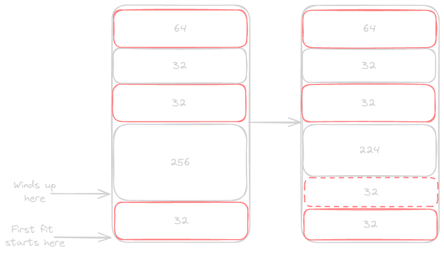

Memory Allocator
Introduction
We use memory allocators nearly every time we write software. They allow our programs to be dynamic and handle a wide variety of input, or user interactions. In languages like C the programmer interacts directly with the memory allocator through calling malloc() and free(). Higher level languages extract away the need for the programmer to worry about memory management, usually through a garbage collector. But what does a memory allocator do? Hopefully we can figure that out through exploring one possible implementation.
Headers
Here are all the headers I believe we will need to complete this project. Apologies if we don’t end up using some of them, just try to cover my bases.
#include <assert.h> #include <stdbool.h> #include <stdint.h> #include <stdlib.h> #include <string.h> #include <unistd.h> #include "gallocc.h"
#ifndef GALLOCC_H_ #define GALLOCC_H_ #include <stdlib.h> #include <stdbool.h> #define HEAP_INC 1024 typedef struct heap_seg { size_t size; struct heap_seg *prev; struct heap_seg *next_free; } heap_seg; size_t round_bytes(size_t); bool segment_free(heap_seg*); size_t segment_size(heap_seg*); void update_back(heap_seg*, heap_seg*, bool); int heap_init(size_t); void *malloc(size_t); void free(void*); void *calloc(size_t, size_t); void *realloc(void*, size_t); #endif // GALLOCC_H_
Exploration
You have hopefully heard a concept in programming called the “heap”. Each time we dynamically allocate memory in our program it ends up on the heap. We know that the computer has all the memory available, so it must have given some of this memory to our heap. For now let’s just imagine that asking for this memory in our program is super complicated, so we will use a statically allocated buffer that we manage ourselves.
Let’s start off by laying our groundwork for this exploration.
#define HEAP_SIZE 1024 void* heap_base; typedef struct heap_seg { size_t size; struct heap_seg *prev; } heap_seg;
For now, we will set our heap to a fixed size of 1024 bytes, and we will use a global variable (☢ I know, I know ☢) to keep track of the base of our heap. Then we define a struct for each segment of our heap, which for now holds a size_t to hold the size in bytes, and a pointer for the previous segment. We will later see how we can perform some cleaver transformations on our size to store more information.
Initialization
int heap_init(void* base) { if (!base) { return -1; } heap_base = base; *(heap_seg*)heap_base = (heap_seg){HEAP_INC, NULL}; return 0; }
From there we need to set our heap up so that users can begin to use it. In a real heap implementation this would be included in the first call to malloc, but with our static version this won’t be possible. Our only real setup here is to initialize our first heap segment, which will occupy the entire space by itself. We want to keep heap segments as large as possible so that we have a higher likelihood of being able to fit a requested allocation.
Once our heap is ready to go we can begin handing out pointers to different segments. Sounds easy right?
Allocation
We will leave error handling out for right now to focus in on the core logic.
void *heap_malloc(size_t bytes) { heap_seg *prev = NULL; heap_seg *ptr = heap_base; while (ptr < (heap_seg*)(heap_base + HEAP_SIZE)) { if ((ptr->size & 0x1) == 0 && ptr->size >= bytes + sizeof(heap_seg)) { // Store old capacity size_t old_cap = ptr->size; // Heap segment is free, and big enough ptr->size = sizeof(heap_seg) + ((bytes + (sizeof(heap_seg) - 1)) / sizeof(heap_seg)) * sizeof(heap_seg) | 0x1; void *user_block = (void *)(ptr + 1); if (old_cap > ptr->size) { heap_seg *next_block = ptr + ptr->size / sizeof(heap_seg); next_block->size = old_cap - (ptr->size ^ 0x1); } return user_block; } prev = ptr; ptr = (void*)ptr / (ptr->size & (~1)); } return NULL; }
Yeah, it’s a bit more going on that I would have assumed at first, but it won’t be too hard to step through. Also note that we are currently covering what is called first fit right now, where we find the first chunk able to fulfil the allocation request, we will cover a different allocation strategy later.
We first start at the base of our heap, and begin checking at each spot if it is both free, and large enough to handle the requested allocation. Once a chunk if found we note its original capacity, and change it’s size to hold the requested amount of bytes. This is also where we set its previous element. You may notice that we don’t set the size to be equal to bytes as the user requested, instead we have to factor in a few more things.
The first portion of the size is the heap_seg struct itself, which in the current implementation is 16 bytes. The next section is the data, which needs to be aligned on 8 byte boundaries. We do this for efficient memory access, as a word on modern 64-bit systems is 8 bytes. To accomplish this we round up the requested size to the nearest multiple of 8, so 16 bytes stays at 16, and 17 bytes rounds up to 24.
Once we put this all together we set the least significant bit to 1. This final bit allows us to keep track of if the heap segment is in use. We are able to do this because each size will be a multiple of 8, meaning that its lower 3 bits will always be 0. We are currently using 1 of the 3 bits, so we can potentially even store more flags if needed.
There we go, we have now produced a heap segment that can be returned to the user. We note the position where they are allowed to begin writing, which we will return at the end of our function. The last step is to see if we need to segment the heap. If the section we allocated is less than the old capacity we get a pointer to the start of the next heap segment, and then set its size to the remaining space in the heap.
That’s how we hand out segments of our heap to users! If we don’t find a suitable segment we advance to the next segment and start over again.
int main() { uint8_t heap[HEAP_SIZE]; heap_init(heap); int *block = heap_malloc(4); assert(block != NULL); *block = 4; int *num = heap_malloc(4); assert(num != NULL); *num = 7; printf("Num holds: %d\n", *num); printf("Block holds: %d\n", *block); }
Num holds: 7 Block holds: 4
It was fairly easy to hand out memory, so how does the user give that memory back?
Freeing
In our most basic implementation “freeing” memory will be nothing more than setting its least significant bit back to 0.
void heap_free(void* block) { if (!block) { return; } heap_seg *header = (heap_seg*)block - 1; header->size ^= 1; }
But we may run into a bit of a problem here. What happens if a user allocated a many 8 byte segments at the start of their program, and then frees them all back once their program gets under way. Then they need to allocate larger segments of memory. With our current free function we would have to skip over all of these tiny segments till we found one large chunk to hand back to the user. What if all of those small segments added together would have been enough to handle their allocation.
This is where we have to rejoin our heap segments to ensure that we do not “fragment” the heap. Surprisingly this is also fairly easy to accomplish once you can visualize the possible states our heap may be in.
When a user requests to free a block there are only 3 possible states that it may be in.

- The segment above or below is free, in which case we need to combine our segment with the adjacent free segment.
- Both segments above and below are free, in which case we need to combine all 3 into a larger block.
- The segments above and below are still in use, in which case we simply set the LSB to 0.
If we follow this behavior on every free call we ensure that every block in our heap will fall into 1 of these 3 states. The implementation here is just to check the block above and below the current block, then apply any needed transformations.
void heap_free(void* block) { if (!block) { return; } heap_seg *header = (heap_seg*)block - 1; // Get prev/next pointers heap_seg *prev = header->prev; heap_seg *next = (void*)header + (header->size & (~1)); if (prev > (heap_seg*)heap_base && !(prev->size & 1)) { prev->size += header->size; header = prev; } if (next < heap_base + HEAP_SIZE && !(next->size & 1)) { header->size += next->size; } header->size ^= 1; }
Expanding on the previous function we obtain pointers to the blocks directly before and after the current block. Then we can check each block, and see if it needs to be merged. If the previous block is free we update it’s size to include the current block, and update our header pointer to this previous block. Then the next block is checked, and we update our size accordingly. The last step is to zero out the “in use” bit of our header.
Note that we do not need to explicitly do anything with the freed memory. By updating the size of the surrounding nodes, we ensure that it will be skipped over when searching for the closest free block. Also, by updating our header pointer we ensure that the following logic will work for any of the 3 possible states of our segment.
With our allocation and freeing functions complete, that is pretty much it for the most basic of heap allocators.
Example Usage
int main() { uint8_t heap[HEAP_SIZE]; heap_init(heap); int *block = heap_malloc(4); *block = 4; int *num = heap_malloc(4); *num = 7; int *test = heap_malloc(4); *test = 66; printf("Address of block: %p\n", block); printf("Address of num: %p\n", num); printf("Address of test: %p\n", test); printf("Size of block: %d\n", ((heap_seg*)block-1)->size ^ 0x1); printf("Size of num: %d\n", ((heap_seg*)num-1)->size ^ 0x1); printf("Size of test: %d\n", ((heap_seg*)test-1)->size ^ 0x1); heap_free(num); heap_free(test); num = heap_malloc(32); *num = 1; printf("Address of block: %p\n", block); printf("Address of num: %p\n", num); printf("Size of block: %d\n", ((heap_seg*)block-1)->size ^ 0x1); printf("Size of num: %d\n", ((heap_seg*)num-1)->size ^ 0x1); }
Address of block: 0x7ffcef5b94a8 <-- Heap Base Address of num: 0x7ffcef5b94b8 <-- Heap Base + 16 Address of test: 0x7ffcef5b94c8 <-- Heap Base + 32 Size of block: 16 Size of num: 16 Size of test: 16 Address of block: 0x7ffcef5b94a8 <-- Heap Base Address of num: 0x7ffcef5b94b8 <-- Heap Base + 16 (same address as above) Size of block: 16 Size of num: 40 <-- 32 byte allocation + 8 byte header
Takeaways
Implementing a naive memory allocator is fairly easy. It won’t be the fastest one in the world, nor the most secure. Either way, this small exploration shows us the basics of how we can hand out chunks of memory to a user, and allow them to be freed back to us.
The first fit algorithm that we chose to implement above is one of the quicker ways to allocate memory (we can also add a global variable that points to the first free block, to further increase speed). While speed is an important factor when it comes to allocating memory, sometimes the user might wish to be more space efficient as opposed to time efficient.

Instead of finding the first available spot we can find the best fit segment which is the smallest segment large enough to handle the requested allocation. One of the major advantages of this algorithm is that it avoids splitting large heap segments, which we should try to preserve for large allocations.

The biggest problem with splitting large heap segments is that we fragment our heap. Our next large allocation may not be able to find a contiguous segment to hold it, thus requiring our allocator to go out to the operating system and request more memory. For this reason, our next iteration will explore this algorithm.
We will see these functions used in the next section, but I will introduce them now so that you can become familiar with their behavior.
size_t round_bytes(size_t bytes) { return (bytes + (sizeof(void *) - 1)) / sizeof(void *) * sizeof(void *); } bool segment_free(heap_seg *seg) { return !(seg->size & 0x1); } size_t segment_size(heap_seg *seg) { return seg->size & (~1); }
Our first new function will perform the byte rounding aligning us to the nearest block of 8 bytes. The next function checks if a block is free, and finally we have a function to get the true size of a block.
Our current implementation also relies on a statically allocated buffer, meaning once we fill this up we won’t be able to hand out more memory. Let’s see how we can make this behavior more dynamic by requested more memory from the operating system.
sbrk()
While the exact details of how a program is laid out in memory is not required to understand this portion, it will be very helpful.
Any of the programs that you choose run on your computer are running in user-space. The CPU scheduling that an operating system does won’t apply here, as we are more concerned with the memory layout of our program. Essentially, when our program is running the operating system provides it a virtual memory space, which our program sees as one contiguous memory space that it has control over.
A program like Firefox or OBS does not need to be concerned with the other programs running on the computer. Under the hood each program may be spread out all over physical memory, or intertwined together with other programs. For our user-space programs to work the operating system “lies” to them, providing a single contiguous section of memory. Our program then runs as if it is the only program on the computer.
When are program is run, it is loaded into memory with a layout as depicted below.

The stack holds local variables and any other data in which it’s size is known at run time. On certain architectures the stack may also be used to hold function arguments. Program Data/Code holds things like constants, uninitialized variables, and the code itself. Lastly, the heap is our program’s dynamic memory space, which can hold variables whos size or quantity is unknown at compile time.
The amount of stack space a program has is set on a operating system level on linux. Running ulimit -a will show all the current limits for your user. On my machine stack size is set to 8192 kb or ~8 mb. A program uses more of the stack by subtracting a certain number of bytes from the stack pointer, making sure to keep this aligned to the architecture specific value.
On the other hand, the heap is not something the user has direct control over from their assembly. In order to get more memory for our heap we have to ask the operating system.
I have been referring to our memory allocator as a “heap allocator”, where the heap refers to the “heap” in memory. Just like our buffer of 1024 bytes in our original implementation, the heap is a large contiguous section of memory. Yet unlike our 1024 byte buffer the heap can grow and shrink as needed. This is accomplished with the system call sbrk().
It is worth noting that modern implementations of malloc() use mmap instead of calls to sbrk. There are many reasons why this change was made, but it essentially boils down to the fact that mmap fits our use cases better, and is safer to use. Using sbrk directly in our code is part of the Posix system API. The Posix API allows our programs to be run on any Posix compliant system, meaning it is essentially an operating system abstraction layer. sbrk (and brk) have both been deprecated in the Posix API. Our implementation will still explore sbrk as it's way to gain more memory.
So how does sbrk work?
sbrk allows a user to specify the number of bytes by which the heap should grow. This is controlling the program break, which is the address directly beyond the data segment of our program. sbrk has 2 use cases, incrementing the program break, or when called with 0, returning the address of the program break. Let’s take a look at how these work.
#include <unistd.h> #include <stdio.h> int main() { void *brk = sbrk(0); sbrk(4); void* new_brk = sbrk(0); printf("Program-Break: %p\n", brk); printf("Program-Break: %p\n", new_brk); printf("Distance-Between: %d\n", new_brk - brk); }
| Program-Break: | 0x55c6fef9c000 |
| Program-Break: | 0x55c6fef9c004 |
| Distance-Between: | 4 |
The first call to sbrk returns the heap base, equivalent to the starting address of our 1024 byte buffer. We then increase the program break by 4 bytes, which returns the address of the previous program break. Therefore, we have to call sbrk(0) again to get the new program break. We see that the distance between the 2 pointers is exactly 4 bytes, exactly what we requested.
The reason why we have to call printf after acquiring the memory address is that it allocates memory internally.
This is great! We can now increase the programs heap segment whenever we want. Let’s take a look at how we can implement this in our malloc function.
Adding sbrk()
Now that we will be using sbrk directly in our program we are going to start running into a problem. The malloc implementation on our machine will be calling sbrk or mmap to increase its heap, and we will be trying to do the same. The issue is that our heaps are intertwined. If my malloc and the system’s malloc are both being run they will step on each other’s toes.
We can get around this by “overriding” malloc for our program.
#include <stdint.h> #include <stdio.h> #include <stdlib.h> void *malloc(size_t size) { exit(72); } int main() { void *memory = malloc(400); }
jackson@jtop:/tmp$ gcc test.c && ./a.out jackson@jtop:/tmp$ echo $? 72
Our custom malloc implementation simply exits the program with a code of 72. Of course, this isn’t very useful, but it demonstrates that we can override the malloc functionality. The first portion of our malloc function will remain the same, initializing our heap, and handing out the first segment. For our static memory allocator we had to call an initialization function in main, but we will have to encode that behavior directly in malloc now.
Heap Initialization
int heap_init(size_t bytes) { heap_base = sbrk(0); size_t increment = (bytes > HEAP_INC) ? sizeof(heap_seg) + round_bytes(bytes) : HEAP_INC; sbrk(increment); *heap_base = (heap_seg){increment, NULL}; if ((int64_t)(heap_end = sbrk(0)) == -1) { return -1; } return 0; }
Our first step is to set up our base pointer, then we check to see how many bytes need to be allocated. We have discussed this before, but it boils down to rounding our size to the closest multiple of 8 that can hold the allocation. Lastly we check if the allocation was successful, and return based on that.
malloc() with sbrk()
From there we scan through our heap one node at a time until we find a suitable spot. Same as before, updating links in our list as we move along.
void *malloc(size_t bytes) { if (!heap_base) { heap_init(bytes); } if (bytes == 0) { return NULL; } // Start from heap base, find first open segment that can hold 'bytes' heap_seg *prev = NULL; heap_seg *ptr = heap_base; while (ptr < (heap_seg *)heap_end) { if (segment_free(ptr) && ptr->size >= bytes + sizeof(heap_seg)) { // Store old capacity size_t old_cap = ptr->size; // Heap segment is free, and big enough ptr->size = sizeof(heap_seg) + round_bytes(bytes) | 0x1; ptr->prev = prev; void *user_block = ptr + 1; size_t next_size = old_cap - segment_size(ptr); if (next_size <= sizeof(heap_seg)) { ptr->size += next_size; } else if (old_cap > ptr->size) { heap_seg *next_block = (void *)ptr + segment_size(ptr); next_block->size = old_cap - segment_size(ptr); next_block->prev = ptr; } return user_block; } prev = ptr; ptr = (void *)ptr + segment_size(ptr); } // .... continued below
This shouldn’t be any different from what we saw before, except for extracting some behavior out into separate functions. Our next step is where we introduce new behavior. If we reach the end of our heap and have not found a suitable spot our heap needs to expand. The first step will be determining how many bytes we need to increase our heap by, the same decision we made when initializing our heap. From there it will go much the same.
// .... continued from above size_t next_size; size_t increment = (bytes > HEAP_INC) ? round_bytes(bytes) : HEAP_INC; size_t new_size = round_bytes(bytes) | 0x1; sbrk(increment + sizeof(heap_seg)); ptr->size = new_size + sizeof(heap_seg); ptr->prev = prev; next_size = increment - segment_size(ptr); heap_end = sbrk(0); // Check if the next segment should be initialized if (next_size <= sizeof(heap_seg)) { ptr->size += next_size; } else if (next_size > 0) { heap_seg *next_block = (void *)ptr + segment_size(ptr); next_block->size = next_size; next_block->prev = ptr; } // Return user writable address return ptr + 1; }
We will go over how we can visualize our heap in just a moment, for now let’s go through the code. After we have determined how many bytes are needed, the pointers are updated, and the heap_end pointer is moved. Our last step is to check if the segment following our allocation should be initialized. This is to avoid allocating a space that would be too small to hold any data. If we have a space that is too small we can just include it in the previous segment, otherwise it becomes its own segment.
Before we see this code in action let’s look at how we can visualize our heap.
Observing Behavior
void heap_walk() { heap_seg *ptr = heap_base; while (ptr < (heap_seg *)heap_end) { printf("Segment size: %4ld, Prev: %14p, Value: %ld, Address: %p\n", ptr->size, ptr->prev, (ptr->size & 1) ? *(uint64_t *)(ptr + 1) : -1, ptr); ptr = (void *)ptr + (ptr->size & (~1)); } }
We see the same logic that we use to find the next block as we saw in malloc. Each segment is printed out as a uint64_t for now, although this isn’t the most flexible as we will see. Even if this is basic it will help us solve many bugs, and to iron out implementation details.
Now we can see how our newly upgraded malloc works!
int main() { int *block = malloc(4); *block = 4; uint64_t *num = malloc(8); *num = 7; uint64_t *test = malloc(69); *test = 66; uint64_t *big_num = malloc(64); *big_num = 64; char *buf; asprintf(&buf, "big num has the value: %ld\n", *big_num); puts(buf); heap_walk(); return 0; }
big num has the value: 64 Segment size: 57, Prev: (nil), Value: 0, Address: 0x55d231e99000 Segment size: 57, Prev: 0x55d231e99000, Value: 0, Address: 0x55d231e99038 Segment size: 57, Prev: 0x55d231e99038, Value: 0, Address: 0x55d231e99070 Segment size: 25, Prev: 0x55d231e99070, Value: 4, Address: 0x55d231e990a8 Segment size: 25, Prev: 0x55d231e990a8, Value: 7, Address: 0x55d231e990c0 Segment size: 89, Prev: 0x55d231e990c0, Value: 66, Address: 0x55d231e990d8 Segment size: 81, Prev: 0x55d231e990d8, Value: 64, Address: 0x55d231e99130 Segment size: 49, Prev: 0x55d231e99130, Value: 2336652897525655906, Address: 0x55d231e99180 Segment size: 592, Prev: 0x55d231e99180, Value: -1, Address: 0x55d231e991b0 Segment size: 1041, Prev: 0x55d231e991b0, Value: 2338615488418374995, Address: 0x55d231e99400
Woah! This is a lot going on, and way more allocations that we performed ourselves. What happened?
Well, now that we have overwritten the glibc malloc implementation, all the library functions that call malloc are calling our version! This is a great sign, and will be a much better test of our functionality than we will probably end up writing. Let’s break down each of the allocations and see how we may want to tweak some of the behavior.
- The first 3 allocations are coming from a system library that makes 3 40 byte allocations on program startup, don’t worry about those.
- The next block of 4 allocations comes from
main, where we callmalloc4 times. - The next 48 byte allocation is coming from
asprintf(). If you’re not familiar with this function I think of it as a bit of a cheat code for strings in C. The function will allocate a buffer to hold the entire string it generates, and gives you the pointer to that string, which you are responsible to free. - The chunk of 592 bytes is a result of the final allocation being larger than the available space. If you total up all the sizes of everything but the last element you will get 1024, and that final allocation is larger than 1024, therefore it forces us to add more space.
- Finally, the 1040 byte allocation comes from
printfallocating an internal buffer for scratch work.
You may notice something suboptimal. When printf requests a 1024 byte allocation we place it after the 592 byte free block. This means that if our next call to malloc is requesting more than 592 bytes it will be placed after the 1024 block, leaving a hole in the middle of our heap.
What if instead we move our new segment to fill that hole, leaving the empty space at the very end of our heap. That way we can avoid a large empty segment in the middle of our heap. This is beneficial for our implementation because future large allocations will now be able to make use of this space, instead of it being trapped in the middle of the heap. The changes we have to make aren’t too bad either.
Filling our Holes
// Replacing the block above size_t next_size; size_t increment = (bytes > HEAP_INC) ? round_bytes(bytes) : HEAP_INC; size_t new_size = round_bytes(bytes) | 0x1; if (segment_free(prev)) { ptr = prev; prev = prev->prev; sbrk(increment); size_t old_size = ptr->size; ptr->size = new_size + sizeof(heap_seg); next_size = (old_size + increment) - segment_size(ptr); } else { // Previous chunk is not free sbrk(increment + sizeof(heap_seg)); ptr->size = new_size + sizeof(heap_seg); ptr->prev = prev; next_size = increment - segment_size(ptr); } heap_end = sbrk(0); // Check if the next segment should be initialized if (next_size <= sizeof(heap_seg)) { ptr->size += next_size; } else if (next_size > 0) { heap_seg *next_block = (void *)ptr + segment_size(ptr); next_block->size = next_size; next_block->prev = ptr; } // Return user writable address return ptr + 1; // return NULL; }
Now you can see we first check if the previous segment is free. This is easy because we have already scanned through our heap, so we know our prev pointer is on the last segment on our heap. If it is free we will slide up to fill it in, and then allocate the remaining needed space at the end. From there both paths follow the same steps to determine if we need to initialize the following block. Finally, we return a pointer to the user’s block just like before.
Now we can see how our heap deals with the situation we saw before.
big num has the value: 64 Segment size: 25, Prev: (nil), Value: 4, Address: 0x5620c36cb000 Segment size: 25, Prev: 0x5620c36cb000, Value: 7, Address: 0x5620c36cb018 Segment size: 89, Prev: 0x5620c36cb018, Value: 66, Address: 0x5620c36cb030 Segment size: 81, Prev: 0x5620c36cb030, Value: 64, Address: 0x5620c36cb088 Segment size: 120, Prev: 0x5620c36cb088, Value: -1, Address: 0x5620c36cb0d8 Segment size: 49, Prev: 0x5620c36cb0d8, Value: 2336652897525655906, Address: 0x5620c36cb150 Segment size: 1041, Prev: 0x5620c36cb150, Value: 2338615488418374995, Address: 0x5620c36cb180 Segment size: 624, Prev: 0x5620c36cb180, Value: -1, Address: 0x5620c36cb590
There we go! The blank space is at the end of our heap, which will help us ensure the heap is being used efficiently.
At this point we have a fully featured memory allocator, it is not the fastest, or the most efficient, but it is correct. The most important part of a memory allocator is that it is correct, and will never hand out a memory address that is invalid.
Upgrades
We can stop here if we really wanted to. An entire general purpose memory allocator in ~130 lines of code, but we discussed a few details of our implementation earlier that we should address now.
First Fit vs Best Fit
first-fit
Just like our algorithm works, we find the first available block, and place our memory allocation there. The issue with this strategy is that we end up chunking our large blocks into smaller blocks. This leaves less large blocks, which will cause us to expand the heap next time we need to handle a large allocation request.
We should instead try to preserve as many large blocks as we can. This algorithm will run slower, because it causes us to scan the entire heap for every allocation. Of course there is always a tradeoff when it comes to programming, here we will see how trading a small amount of time for a more efficient use of space will be worth it.
best-fit
For this algorithm to work we will have to change the way we find a segment. The linear walking of our heap can stay the same, but we will have to maintain a pointer to the smallest block large enough to hold the allocation. If we get the end and have a block, we use it to hold our allocation, otherwise we continue on like we had done before.
Our first-fit algorithm has a higher likelihood of segmenting the heap, and we would like to avoid this as much as possible.
Segment size: 33, Prev: (nil), Value: 9, Address: 0x5600eb883000 Segment size: 232, Prev: 0x5600eb883000, Value: -1, Address: 0x5600eb883020 Segment size: 265, Prev: 0x5600eb883000, Value: 7, Address: 0x5600eb883108 Segment size: 241, Prev: 0x5600eb883108, Value: 2, Address: 0x5600eb883210 Segment size: 24, Prev: 0x5600eb883210, Value: -1, Address: 0x5600eb883300 Segment size: 265, Prev: 0x5600eb883300, Value: 64, Address: 0x5600eb883318
If we now request a 8 byte allocation, can you see where it will be placed?
Segment size: 33, Prev: (nil), Value: 9, Address: 0x55a298d57000 Segment size: 25, Prev: 0x55a298d57000, Value: 24, Address: 0x55a298d57020 Segment size: 208, Prev: 0x55a298d57020, Value: -1, Address: 0x55a298d57038 Segment size: 265, Prev: 0x55a298d57000, Value: 7, Address: 0x55a298d57108 Segment size: 241, Prev: 0x55a298d57108, Value: 2, Address: 0x55a298d57210 Segment size: 24, Prev: 0x55a298d57210, Value: -1, Address: 0x55a298d57300 Segment size: 265, Prev: 0x55a298d57300, Value: 64, Address: 0x55a298d57318
Just like we said before, instead of finding the free 24 byte block (8 byte allocation, 16 byte header), we end up splitting the larger 232 byte block. How can we fix this in our malloc() function?
// Start from heap base, find first open segment that can hold 'bytes' heap_seg *prev = NULL; heap_seg *ptr = heap_base; heap_seg *best_prev = NULL; heap_seg *best = NULL; while (ptr < (heap_seg *)heap_end) { if (segment_free(ptr) && ptr->size >= bytes + sizeof(heap_seg) && (!best || segment_size(ptr) < segment_size(best))) { best = ptr; best_prev = prev; } prev = ptr; ptr = (void *)ptr + segment_size(ptr); } // Found a suitable block for Best-Fit if (best) { ptr = best; // Store old capacity size_t old_cap = ptr->size; // Heap segment is free, and big enough ptr->size = sizeof(heap_seg) + round_bytes(bytes) | 0x1; ptr->prev = prev; void *user_block = ptr + 1; size_t next_size = old_cap - segment_size(ptr); if (next_size <= sizeof(heap_seg)) { ptr->size += next_size; } else if (old_cap > ptr->size) { heap_seg *next_block = (void *)ptr + segment_size(ptr); next_block->size = old_cap - segment_size(ptr); next_block->prev = ptr; } return user_block; }
This boils down to a slight refactor, with 2 new pointers, and an added condition to our searching algorithm. Instead of stopping at the first free block we check to see if it is big enough, and more importantly, the best-fit we have seen. After scanning through the heap we use the best block if we have one, otherwise we continue on like before.
Comparing to the series of allocations demonstrated above, this new algorithm produces a less segmented heap.
Segment size: 33, Prev: (nil), Value: 9, Address: 0x5647b2660000 Segment size: 232, Prev: 0x5647b2660000, Value: -1, Address: 0x5647b2660020 Segment size: 265, Prev: 0x5647b2660020, Value: 7, Address: 0x5647b2660108 Segment size: 241, Prev: 0x5647b2660108, Value: 2, Address: 0x5647b2660210 Segment size: 25, Prev: 0x5647b2660210, Value: 24, Address: 0x5647b2660300 Segment size: 265, Prev: 0x5647b2660300, Value: 64, Address: 0x5647b2660318
Now we can see that our allocation occupies the 24 byte block near the end of the heap, leaving the entire 232 byte block for future allocation that may need more space.
That was a pretty easy change to handle, but you may notice another inefficiency. Every time an allocation is requested we have to start at the beginning of the heap. In these small examples that isn’t an issue, but imagine a heap the is full for the first 1-2 MB, with the first free block sitting at the end. We would spend precious time scanning over blocks that we cannot use. How can we fix this?
Implicit vs Explicit Free Lists
The way our heap is linked together is what is known as an implicit free list, meaning that each node is directly linked together, and we use a check at each step in our list to determine if the segment is free. This works well for a simple implementation, but we are slowed down by traversing a linked list, and calling a function at each step. What if instead we only looked at the free segments.
This is known as an explicit free list, where the free nodes are in their own linked list. This can be implemented with either a regular linked list, or even a circularly linked list. For our best-fit strategy, a regular singly linked list makes the most sense.
We have covered first-fit and best-fit, but there is an additional allocation algorithm called next-fit. Where the searching begins from the last block that was allocated. For this algorithm we might end up starting in the middle of the list, so a circularly linked list would be required.
Each node will now have to hold an additional pointer, adding 8 bytes of overhead. Managing these pointers will be very complicated, and can be very error-prone if we are not careful.
Groundwork
The first step is adding some bookkeeping, keeping track of the first block, and adding the next_free pointer to our struct.
heap_seg *heap_base = NULL; heap_seg *heap_end = NULL; heap_seg *first_free = NULL; // New
typedef struct heap_seg { size_t size; struct heap_seg *prev; struct heap_seg *next_free; // New } heap_seg;
Then we will update our free() function, as this is the easiest to understand. The function remains most same, we just need to introduce one function to update our new next_free pointers.
void update_back(heap_seg *cur, heap_seg *target, bool free_mode) { heap_seg *prev_free = NULL; if (cur) { prev_free = cur->prev; } while (prev_free && !segment_free(prev_free) && prev_free >= heap_base) { prev_free = prev_free->prev; } if (prev_free) { if (free_mode) { target->next_free = prev_free->next_free; } prev_free->next_free = target; } else { if (free_mode) { target->next_free = first_free; } first_free = target; } }
This function takes in a current pointer, which is the location from which we will begin searching backwards. Next we take in a target pointer, and finally a boolean that tells the function which mode to use. We can use this to update our linked last so that the links between free elements remains correct.
The basic premise of how this algorithm works is fairly simple, but coming to this conclusion is difficult. It works on the principle that once a segment is in use we can simply skip over it, with the same idea working in reverse when a segment is allocated.
If we have a current node we walk it backwards until we find the previous free node. From there we do one of two things:
- If we have a previous free node we know we are somewhere in the middle of the list. Therefore, we make this previous node point to our target. Additionally, if we are in free mode we will want to point ourselves at the next free node in the list (which is the previous nodes
next_free). - Otherwise, we know that we are at the front of the list. If we’re in free mode then we set our next to the current
first_free, and we always make ourselves thefirst_free.
You may wonder what the target parameter is, and why it is necessary. This is an abstraction that allows us to use the same update_back function in both allocation and free calls.
When called in an allocation context our target is the segment immediately following our newly allocated segment. If this segment is NULL it will be set as the end of our linked list, otherwise it sits inside the list and pointers will be updated accordingly.
Alternatively, when called in a freeing context, target represents the newly freed segment. In a list of [1, 2, 3] our free call uses 1 as its current, and 2 as its target. An allocation call uses 2 as its current, and 3 as its target. With 2 being the element being acted upon in both cases.
free
After merging adjacent segments together we need to move backwards in our last and ensure that the list now includes the current element. This is exactly the same as inserting a node in a linked list.
void free(void *block) { if (!block) { return; } heap_seg *header = (heap_seg *)block - 1; // Get prev/next pointers heap_seg *prev = header->prev; heap_seg *next = (void *)header + segment_size(header); if (prev > (heap_seg *)heap_base && segment_free(prev)) { prev->size += header->size; header = prev; } if (next < (heap_seg *)heap_end && segment_free(next)) { header->size += next->size; update_back(prev, header, true); header->next_free = next->next_free; header->size ^= 1; return; } update_back(prev, header, true); header->size ^= 1; }
We are essentially finding the previous free element and telling it to point at the new target, and if it doesn’t exist then we know it is the first free segment.
Another thing to keep in mind is that if we free a block that is surrounded on both sides by in-use segments we need to jump over this block. We handle this in the if next block. After updating links we need to set the current blocks next_free pointer to jump over the in-use block.
When we free the 32 byte block on the heap it merges with the segment before it. Which is exactly what we want our free function to do, but now we have to deal with our explicit free list. The only change is needing to go back and point to the larger block we just made, and pointing ourselves at the next free block.
malloc
This is where things start to a lot more complicated in terms of explicit free list. One thing to keep in mind is that a linked list allows us to skip over segments currently in use. So there is no need for us to clean up next_free pointers each time a segment is modified. We will see how this all works in our diagrams and code.
From a basic standpoint, this is how we want malloc to work.
Instead of pointing at our original 256 byte block, we need to traverse backwards and tell the previous free element to point at the new smaller free block. Allocating a new node and updating links is similar to how free works, but we will need to spend a bit more time to get our pointers in the right places, so we can use the same update_back function.
heap_init will also have to change just slightly to ensure our first_free pointer is set.
int heap_init(size_t bytes) { heap_base = sbrk(0); first_free = heap_base; size_t increment = (bytes > HEAP_INC) ? sizeof(heap_seg) + round_bytes(bytes) : HEAP_INC; if ((sbrk(increment)) == (void *)-1) { return -1; } *heap_base = (heap_seg){increment, NULL, NULL}; heap_end = sbrk(0); return 0; }
Let’s start by seeing how we can now walk the linked list more efficiently.
void *malloc(size_t bytes) { if (!heap_base) { heap_init(bytes); } if (bytes == 0) { return NULL; } // Start from first free, find first open segment that can hold 'bytes' heap_seg *ptr = first_free; heap_seg *best = NULL; while (ptr && ptr < heap_end) { if (segment_free(ptr) && ptr->size >= bytes + sizeof(heap_seg) && (!best || segment_size(ptr) < segment_size(best))) { best = ptr; } if (!ptr->next_free) { break; } ptr = ptr->next_free; } // Continued below ....
Now our searching loop begins at the first free element, and will skip over segments that are in use. This will reduce our searching time on a heap that has high fragmentation, or numerous in-use segments.
One consideration we have to take into mind is that we cannot walk our pointer off the end of the list. If we were to do so we would lose our pointer to the end of the list, so when we encounter this situation we break early.
We know that if we reach the end of the list without finding a best-fit segment we will have to expand our heap in order to accommodate the requested allocation. So it will be ok to leave ptr as the last element, as we will not attempt to put something in its place.
From there we follow the same 1 of 2 paths as before.
// .... continued from above // Found a suitable block for Best-Fit if (best) { ptr = best; // Store old capacity size_t old_cap = ptr->size; // Heap segment is free, and big enough ptr->size = sizeof(heap_seg) + round_bytes(bytes) | 0x1; size_t next_size = old_cap - segment_size(ptr); if (next_size <= sizeof(heap_seg)) { ptr->size += next_size; update_back(best, best->next_free, false); } else if (old_cap > ptr->size) { heap_seg *next_block = (void *)ptr + segment_size(ptr); *next_block = (heap_seg){old_cap - segment_size(ptr), ptr, ptr->next_free}; heap_seg *next_next_block = (void *)next_block + segment_size(next_block); if (next_next_block < heap_end) { next_next_block->prev = next_block; } // Scan for previous free block, update links update_back(best, next_block, false); } return ptr + 1; } // continued below ....
Just as we mentioned above, if we find a suitable block we will need to point our linked list to jump around this newly allocated segment. The function accepts the allocated segment, the following block, and false denoting that we are in allocation mode.
// .... continued from above // Ran out of space heap_seg *prev = NULL; if (!ptr) { ptr = heap_base; while (ptr < heap_end) { prev = ptr; ptr = (void *)ptr + segment_size(ptr); } if (ptr < heap_end) { ptr->prev = prev; } } size_t next_size; size_t increment = (bytes > HEAP_INC) ? round_bytes(bytes) : HEAP_INC; size_t new_size = round_bytes(bytes) | 0x1; heap_seg *new_seg = ptr; size_t old_size = (new_seg < heap_end) ? new_seg->size : 0; if (new_seg < heap_end && new_seg->prev && segment_free(new_seg->prev)) { // Previous chunk is free new_seg = new_seg->prev; if ((sbrk(increment)) == (void *)-1) { return NULL; } new_seg->size = new_size + sizeof(heap_seg); next_size = (old_size + increment) - segment_size(new_seg); } else { // Previous chunk is not free size_t cur_size = new_size + sizeof(heap_seg); if (round_bytes(bytes) < increment) { if ((sbrk(increment)) == (void *)-1) { return NULL; } next_size = old_size + increment - (cur_size ^ 0x1); } else { if ((sbrk(increment + sizeof(heap_seg))) == (void *)-1) { return NULL; } next_size = old_size + increment - (cur_size ^ 0x1) + sizeof(heap_seg); } new_seg->size = cur_size; } heap_end = sbrk(0); // Check if the next segment should be initialized if (next_size <= sizeof(heap_seg)) { ptr->size += next_size; } else if (next_size > 0) { heap_seg *next_block = (void *)new_seg + segment_size(new_seg); *next_block = (heap_seg){next_size, new_seg, NULL}; assert((void *)next_block + segment_size(next_block) == heap_end); // Scan for previous free block, update links update_back(new_seg, next_block, false); } // Return user writable address return new_seg + 1; } // End
One checking is being added here, if we get to this point and our first_free pointer is NULL, we must be out of memory. This also means we don’t have a pointer to the last element in the list, so by walking from the beginning of the list we land on the last element. This allows us to have a valid prev pointer, which sets us up perfectly for the remainder of the function.
The old size is also stored in a variable here, so that it can be added onto the remaining free segment after moving the heap end.
If more memory is needed, we increase our heap size, segment it, and update pointers if needed. The last step is the same as above, we find the previous free element and update our explicit free list.
calloc()
If you remember from my previous article on hashmaps, I like using calloc during both the exploration and optimization phase of coding. Of course in performance critical applications every CPU cycle counts, but for most purposes a few extra cycles to clear out memory is more than worth it.
Surprisingly to me, implementing calloc is as simple as a call to malloc, memset to 0, and then returning a pointer. The more interesting thing to me about calloc are the parameters it takes. The glibc calloc takes in the number of elements, and he size of each element, both being a size_t. This makes calloc easier to read in source code, and makes your intentions for the size of the allocation clearer.
void *calloc(size_t count, size_t size) { void *ptr = malloc(count * size); if (!ptr) { return NULL; } memset(ptr, 0, count * size); return ptr; }
Just remember to include <string.h> for the memset function, and you should be good to go.
realloc()
I don’t get to use realloc all that often, but when you find a good use case it always comes out super clean. It shouldn’t be too hard to implement, just take a look at the behavior described in man realloc and you will be good to go.
void *realloc(void *ptr, size_t size) { size_t min = (size < segment_size((heap_seg *)(ptr - 1))) ? size : segment_size((heap_seg *)(ptr - 1)) - sizeof(heap_seg); free(ptr); if (size == 0) { return NULL; } heap_seg *new_ptr = malloc(size); if (!new_ptr) { return NULL; } memmove(new_ptr, ptr, min); return new_ptr; }
The first step is to calculate how many bytes will need to be moved. We take the smallest of the 2 values, and store that for later. We can then free the original pointer, and stop here if the user requested a reallocation size of 0 (the same as a free call). A new block is allocated to hold the requested size, and we copy over the original data, finally returning the pointer to the user.
Testing
We are nearly there! Time to see if we can spot any bugs while testing our code. I would recommend using standard library functions that perform allocations, using custom data structures, and performing manual allocations. Of course, it is nearly impossible to catch every possible bug, and test every edge case.
Hashmap Testing
For this case I am going to use the previously implemented hashmap for testing.
The hashmap starts out with a default size of 11, and target load factor of 0.5. I made sure to insert enough elements to ensure that it would resize at least once.
glibc malloc
Index: 0, Key: EMPTY, Value: EMPTY Index: 1, Key: Bailey, Value: 92 Index: 2, Key: Dylan, Value: 17 Index: 3, Key: Billy, Value: 25 Index: 4, Key: EMPTY, Value: EMPTY Index: 5, Key: Jackson, Value: 23 Index: 6, Key: EMPTY, Value: EMPTY Index: 7, Key: EMPTY, Value: EMPTY Index: 8, Key: EMPTY, Value: EMPTY Index: 9, Key: EMPTY, Value: EMPTY Index: 10, Key: Josh, Value: 11 Index: 11, Key: EMPTY, Value: EMPTY Index: 12, Key: Steve, Value: 36
Our malloc
Index: 0, Key: EMPTY, Value: EMPTY Index: 1, Key: Bailey, Value: 92 Index: 2, Key: Dylan, Value: 17 Index: 3, Key: Billy, Value: 25 Index: 4, Key: EMPTY, Value: EMPTY Index: 5, Key: Jackson, Value: 23 Index: 6, Key: EMPTY, Value: EMPTY Index: 7, Key: EMPTY, Value: EMPTY Index: 8, Key: EMPTY, Value: EMPTY Index: 9, Key: EMPTY, Value: EMPTY Index: 10, Key: Josh, Value: 11 Index: 11, Key: EMPTY, Value: EMPTY Index: 12, Key: Steve, Value: 36
Performance Testing
To test the performance of our hashmap we will perform a linear set of increase size allocations. Without freeing any of the memory allocated is essentially the worst case for our implementation. The biggest weak point of our malloc function is that when it runs out of memory it has to walk the entire heap before it can expand it. This set of allocations will test to see how slow this is.
#include <stdio.h> #include <time.h> #include <stdlib.h> // Swap these 2 /* #include "gallocc.h" */ // Swap these 2 int main() { struct timespec start, end; clock_gettime(CLOCK_MONOTONIC, &start); void *ptr; for (int i = 0; i < 64000; i++) { ptr = malloc(i); } clock_gettime(CLOCK_MONOTONIC, &end); double elapsed_time = (end.tv_sec - start.tv_sec) * 1000.0 + (end.tv_nsec - start.tv_nsec) / 1e6; printf("Time: %.3f milliseconds\n", elapsed_time); }
glibc malloc
13192 System calls 67ms
Our malloc
15247 System calls 1435ms
Analysis
Our implementation is much slower, partially explained by performing more system calls, and the walking of the list each time we run out of space. If we were to fix any bottleneck, that would be the first place to look. Another way that could be mitigated would be increased the size by which the heap increases each time.
For this speed test I used strace to see how much the glibc malloc was increasing the program break by, which turned out to be 135168 bytes. If we run our version with the original 1024 byte increment it will be much slower, so I decided to match the glibc version. Of course, this is just a trade-off of how much memory you are willing to have in-use at one time.
My goal was not to create the fastest memory allocator possible, but to use this is an opportunity to learn how they work.
Learning Moments
Now that we’ve come to the end I’d like to talk about what I learned during the writing of this article.
Using gdb
I have used gdb from a surface level before, but never to work on complex programs like this. Most of my usage would follow the same pattern, segmentation fault, compile with -g, run in gdb and get a back trace. From there it was usually easy to understand what happened. That was entirely different while writing my memory allocator.
Before overwriting the glibc malloc it was easy to debug using print statements like I was used to. However, this came at the downside of not finding as many bugs with my code. You can only think of so many edge cases before you start running out of ideas. Once we overrode the malloc the bugs were instantly exposed, but this came at the downside of no longer being able to use print debugging or asserts.
Internally the printing functions and assert allocate buffers to do their scratch work, which of course wouldn’t work if our malloc was failing. Time to break out gdb then. A small portion of the bugs could be solved by simply printing a back trace, while most others required stepping through the program. The TUI included with gdb made viewing source code and printing the value of different variable a lot easier.
Overall, I think this is a great style of project for learning gdb, with many complex operations, and the inability to use print debugging.
C Global State
We are often told to avoid global state when writing our programs, and I would generally agree when talking about application style programs. However, when it comes to low level or systems programming it is unavoidable in most situations.
In order for malloc to have as easy of a user interface as it currently does, it has to store some global state. Users expect to be able to call malloc and free anywhere in their code without having to first instantiate some sort of memory allocator object. You already know this, but malloc is the exact opposite of a pure function, it is entirely dependent on the state of the operating system below it, and the other processes running on the system.
Once memory has been allocated there is no easy way to get the start of the program’s heap, so we have to store that in a variable that will be accessible to malloc and its related function. Similarly, there is no system call to get the first free segment in our heap, because that is a concept we created ourselves, not an operating system primitive. So we also store this in a global variable, which allowed us to implement our explicit free list, greatly speeding up calls to malloc.
The last global variable is not entirely necessary, but it helps us avoid making a system call each time we need to reference the end of our heap. Of course, we can always call sbrk(0) to get the end of the heap, but system calls are not free, so we try to avoid making them.
Tradeoffs
We could have avoided tracking the end of our heap by introducing another pointer to our heap_seg struct. Instead of just using the size of each segment to traverse the list, we could have an explicit next pointer. This was our last node could just point to NULL
This would be an optimization we could look at in the future. I avoided doing it here because our heap_seg struct was already 24 bytes, which I feel is a large overhead on each allocation. The glibc version of malloc uses headers of 16 bytes (I am probably wrong here), so for a future rewrite we might consider using one of the other 2 bits we have free at the bottom of the size to store information about being at the end of the list.
There is also the possibility of having a header and a footer, which further increases overhead, but can make the implementation much easier.
Linked Lists
I am personally not the biggest fan of linked lists, but they have their place in a library like this. Arrays are great, but they’re entirely inflexible, both in total size, and size per element. In this case we need our implementation to be adaptable for changes in both, so a linked list is required.
In fact our writing our memory allocator is really just writing a linked list on top of a giant slab of memory. Most of the challenges we solved are the same challenges you encounter working on a linked list, complicated by the fact we want to try to increase the heap by a fixed size, as opposed to calling sbrk for each allocation request.
We can even solve the biggest bottleneck in our implementation by using a concept from most doubly linked lists. In addition to tracking the end of the heap we could also track the last allocated segment. Then when first_free is set to NULL the algorithm would not need to traverse the heap just to get a pointer to this last element. Each time we performed an operation on a segment we would just need to check if its address plus its size gets us past the end of the list.
Man Pages
In addition to using a LSP like clangd to get function definitions and doc comments, man pages are great for learning how to use the functions available in C. sbrk is not the easiest function to understand, but once you read up on how it works you can start by using it in a test program. Most of the printing functions have similar names, so looking up their differences can help you choose the right one.
If you’re unfamiliar with any system call you can look up its man page, which often includes example usage to help get you started.
Assert
This is my first time using asserts throughout a program as mini test cases that need to pass to ensure the implementation is correct. Every time you discover a bug in your code add an assert to ensure that it doesn’t happen again.
The most obvious one I can think of in our memory allocator is ensuring that the address of the last segment plus its size should equal the heap_end pointer. Throughout the coding of this memory allocator I ran into a nasty bug where the last segment was being left off of the heap. It turned out that when calling sbrk I forgot to note the size of the previous element if it was free. This size needed to be added onto the end of our list. The assert now ensures that if this happens the program will exit.
Another helpful thing with asserts is that they can easily be disabled with one like of code.
#define NDEBUG #include <assert.h>
The NDEBUG line makes all assert lines a nop.
Conclusion
That’s it! A memory allocator in ~250 lines of code. This is definitely a project I will continue to improve upon when I get the time to do so. I find this level of programming fascinating, and it gives me a greater understanding of low level concepts.
Don’t be afraid to reinvent the wheel, even if your wheel ends up being far from perfect. Before writing this memory allocator I had zero knowledge of how they worked, and that made me discover the pitfalls that would be skipped over if I had just looked at completed source code. This video was my introduction to the concept, and even then I strayed very far from the basics laid out in the video.
Just like with the hashmap we worked on last time, I knew how it needed to work in the end, and this guided my implementation. There were many times in writing this where I found myself avoiding a certain implementation because it felt “wrong”. Guess what? In the end those are the exact implementations I ended up landing on. You won’t know if something is the “right way” to do it until you try.
Don’t stop yourself from solving a problem because “there has to be an easier/better way to do it”. Solve the problem first, then optimize and clean up your code. The update_back function is a perfect example of this. I had that exact behavior in 3 different spots of the code. As soon as I saw this I tried to extract it into a function, which failed, because the behavior was not nailed down. This stalled my progress because I hated seeing the same behavior in 3 places. Duplication is bad, but extracting behavior into a function without understanding the desired behavior is worse.
So just start writing the code. You will discover the pitfalls, and then work around it. Write it once, throw it away, and write it better with what you’ve learned.